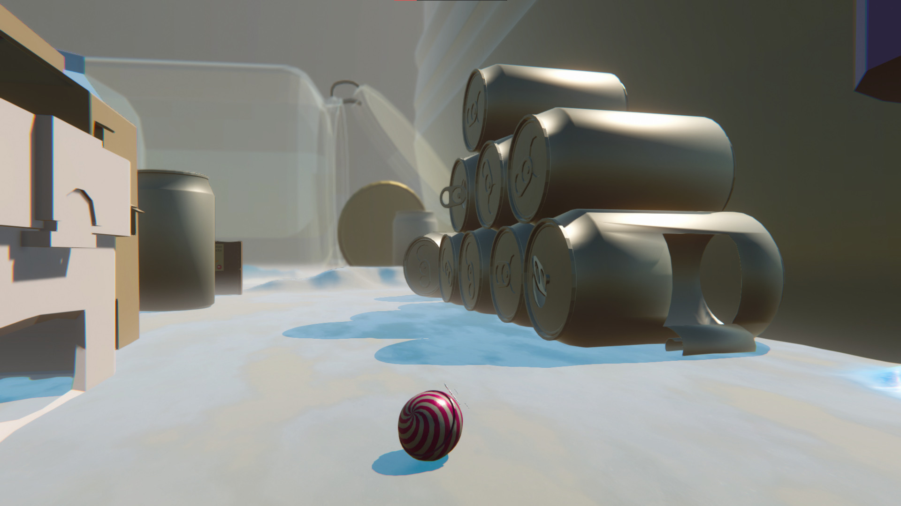
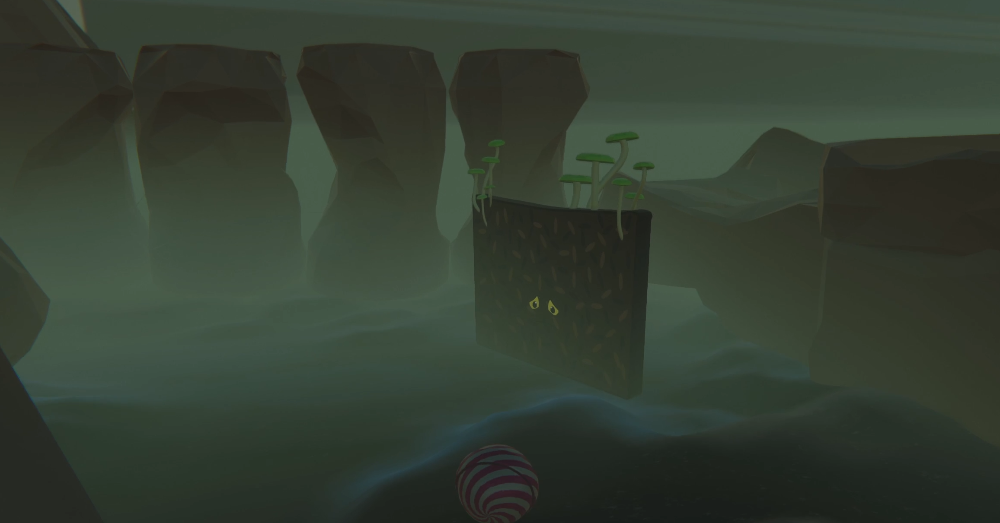
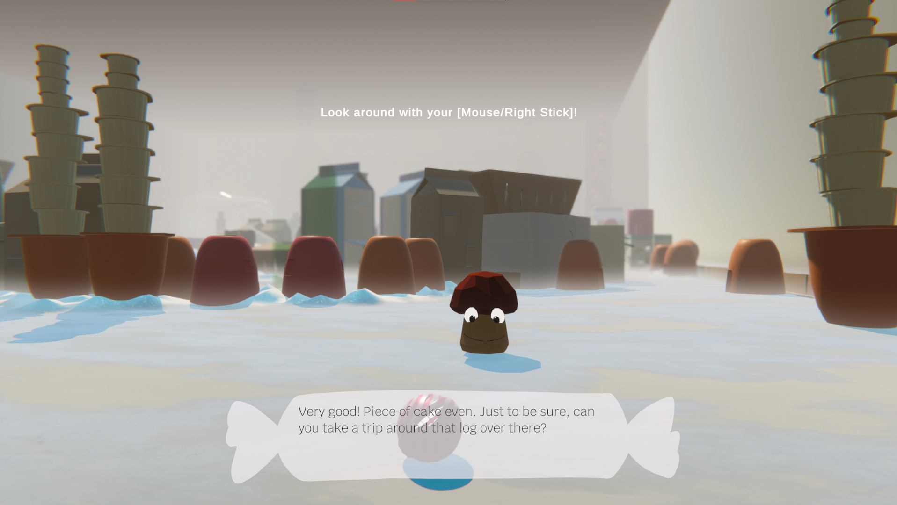
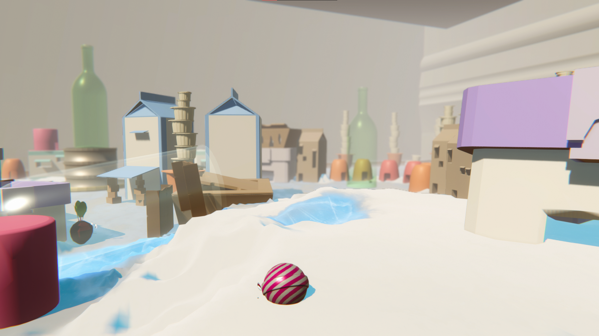
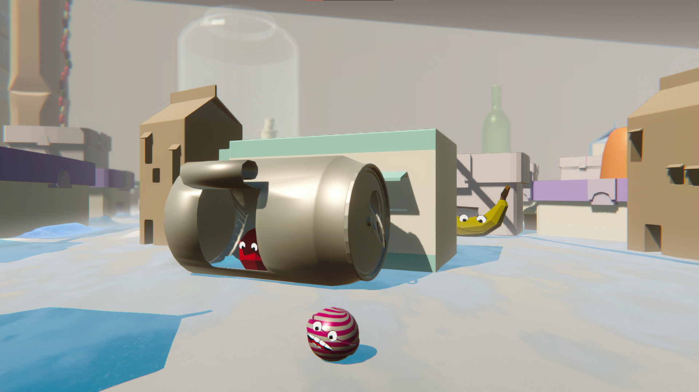
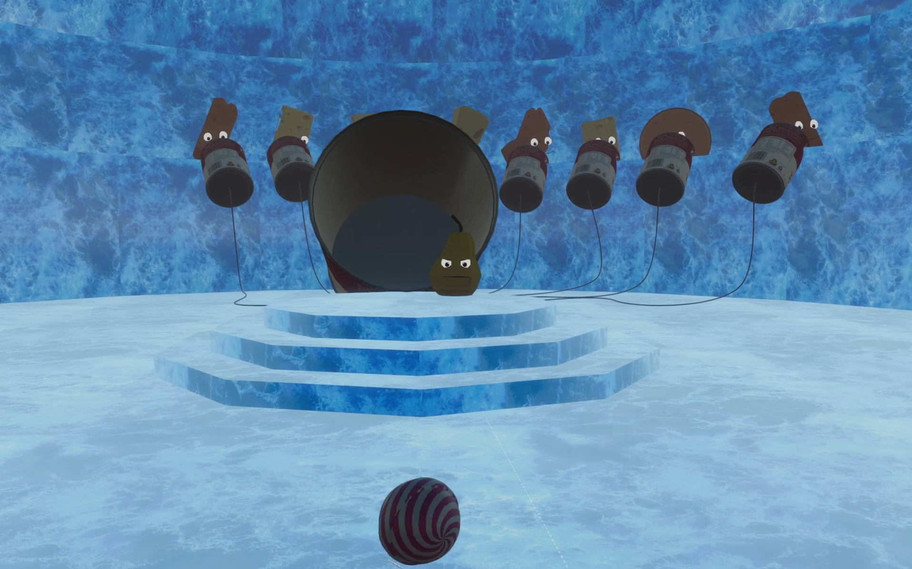
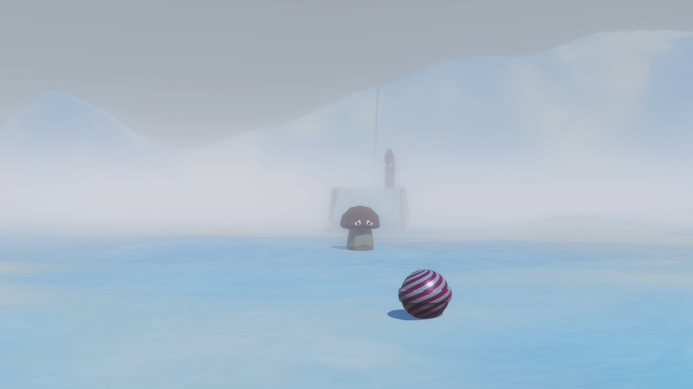

A Song of Mold and Cheese








Overview
This is a project I made with 7 other people for a university course, Game World Design. The focus was mostly on creating the world, story, and environmental storytelling.
The game takes place in a fantastical fridge able to contain a vast world split into three castes: bottom, middle, and upper shelf. You as the player, the newcomer in the fridge world, are supposed to learn about your surroundings, inhabitants, and hidden issues.
You can roll around to explore and perform basic tasks to progress, such as putting up propaganda posters, talking to NPCs, and adjusting sliders. The game focuses on some underlying heavy topics while keeping a quite light-hearted atmosphere with comedic elements.
Role and Contributions
Art Lead and Level Designer. My responsibilities in the 7-person team comprised sketching the general idea and look of the world, sketching and providing references for asset creation, delegating tasks to others, ensuring coherency between assets through 3D guidelines, designing the level prototype, and in the end creating the middle shelf and bottom shelf levels.
In addition to that, I also modelled some assets for the middle shelf. For the bottom shelf I reused all assets and made a worn-out, destroyed look by slightly sculpt-editing them in VR.
Engine and Tools
Unity, Github, Photoshop, Gimp, Blender, Shapelab (VR).